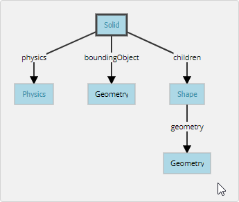

W17協同任務 <<
Previous Next >> 40723110
Webots W17
https://cyberbotics.com/doc/guide/tutorial-2-modification-of-the-environment
Hands-on #1: Make sure the my_first_simulation.wbt world file is open, and that the simulation is paused and is at a virtual time of 0. Using the File / Save World As... menu, save the simulation as obstacles.wbt.
確保先前儲存的文件已經打開,並將模擬暫停及時間歸零,在另存成obstacles.wbt
Hands-on #2: To remove the RectangleArena, select it either in the 3D view or in the scene tree view with a left click and press the Delete key on your keyboard. Alternatively, you can right click on it in the 3D view and select Delete in the context menu (you can also use the context menu directly in the scene tree view). Select the TexturedBackroundLight node and click on the Add button. In the open dialog box, and choose PROTO nodes (Webots Projects) / objects / floors / Floor (Solid).
在3D試圖或場景樹中將 RectangleArenag 刪除並點選 TexturedBackroundLight 再點 add 並依路徑選擇 PROTO nodes (Webots Projects) / objects / floors / Floor (Solid)
Hands-on #3: In the scene tree view select and expand the Floor. Modify the size field and set it to {1, 1} to resize it to 1mx1m.
將 Floor 展開 將 size 字段修改成 1X1
The solid node(實體節點)
A Solid node represents a rigid body,To define a rigid body, you will have to create a Solid node. Inside this node you will set up different sub-nodes corresponding to the characteristics of the rigid body. The following figure depicts a rigid body and its sub-nodes. The graphical representation of the Solid node is defined by the Shape nodes populating its children list. The collision bounds are defined in its boundingObject field. The graphical representation and the collision shape are often but not necessarily identical. Finally, the physics field defines if the object belongs to the dynamical or to the static environment. All these sub-nodes are optional, but the physics field needs the boundingObject to be defined.
Solid節點代表一個剛體,在節點內可依缸體特性設置子節點,下圖描繪了剛體及子節點 下圖以 Shape 定義 Solid節點中的children。在 boundingObject 字段中定義碰撞範圍。圖形表示與碰撞形狀不一定相同。physics字段是定義屬於動態環境或靜態環境,但需要 boundingObject 定義該字段。

Create A Ball(創建一個球)
Hands-on #4: In the scene tree view, select the last node and press the Add button. In the dialog, open the Bases nodes section and select the Solid node. In the scene tree view, expand the Solid node and select its children field. Add a Shape node to it by using the Add button. Select the appearance field of the Shape node and use the Add button to add a PBRAppearance node.
1.Add a Sphere node as the geometry field of the newly created Shape node.
2.Expand the PBRAppearance node and change its metalness field to 0 and its roughness field to 1.
3.Add another Sphere node to the boundingObject field of the Solid.
4.Finally add a Physics node to the physics field of the Solid.
5.By modifying the translation field of the Solid node, place the ball in front of the robot (at {0, 0.2, -0.2} for example).
6.Save the simulation.
7.The result is depicted in this figure.
步驟#4:在場景視圖中，選擇最後一個節點並且按"ADD"鈕，在對話框裡打開"基礎"節點(Bases nodes)，接著選擇"實體"節點(Solid node)。
在場景視圖中，展開"實體"節點(Solid node)，然後選擇子字段(children field)，按"ADD"新增一個"形狀"節點，選擇形狀節點中的外觀字段，
接著按"ADD" 鈕 新增一個"PBRAppearance"節點。
1.新增一個球體節點(Sphere node)作為新建的形狀節點的幾何字段。
2.展開PBRAppearance節點，並且將金屬字段設定0，接著粗糙度字段設定1。
3.新建另一個球體節點(Sphere node)，並添加到實體的 boundingObject 字段。
4.最後，新增一個Physics節點到實體中的Physical字段。
5.修該時體節點的平移字段，把球放在機器人面前(例如:在座標[0,0.2,-0.2])。
6.儲存模擬。
7.結果如圖所示。

Geometries(幾何形狀)
Hands-on #5: For each Sphere node defining the ball, set its radius field to 0.05 and its subdivision field to 2. Refer to the Reference Manual to understand what the subdivision field stands for.
步驟#5:定義每個球體節點，將半徑字段設置為0.05，並且把細分(subdivision)字段設定為2，請查閱《參考手冊》了解細分字段的意義。
DEF-USE Mechanism
定義使用原理
Hands-on #6: Select the first Sphere node (the child of the Shape) in the scene tree view.
The field editor of the scene tree view allows you to enter the DEF string.
動手操作6 : 在左邊場景列中選擇第一個Sphere模型(Shape的次級模型)。
點選場景列中的 field editor，這裡可以讓你輸入指令。
1.Enter BALL_GEOMETRY in this field.
第一步 : 輸入 BALL_GEOMETRY
2.Select the boundingObject field (containing the second Sphere node), and empty it by right clicking the field in the scene tree and choosing the Delete entry in the context menu that pops up.
第二步 : 選擇boundingObject(包含第二個的Sphere模型)，然後點擊右鍵選擇刪除
3.Then, select the boundingObject field and click on the Add button, and select the USE / BALL_GEOMETRY in the dialog box.
第三步 : 然後選擇 boundingObject ，點選添加後在對話中選擇 USE / BALL_GEOMETRY
4.The result is shown in this figure.
結果如圖所示


Hands-on #7: Create a second ball with the same parameters but using the Shape node (rather than the Sphere node directly) for the DEF-USE mechanism.
使用DEF-USE機制的Shape節點（不是直接使用Sphere節點）新建第二個有相同參數的球
Add Walls
添置牆壁
In order to verify your progression, implement by yourself four walls to surround the environment.
為了確認你的進度，請自己在環境中設置四道牆。
The walls have to be defined statically to the environment. Understand the difference between static and dynamic
必須根據環境的條件去定義牆壁，並區分動態與靜態的區別。
Hands-on #8: Add four walls without physics and using only one definition of the Shape node.
僅使用形狀的定義去添加牆壁
Solution: World File
解決方案：世界文件
To compare your world with the solution,
為了將您的世界與解決方案進行比較，
go to your files and find the folder named "my_first_simulation" created in Tutorial 1,
轉到文件，找到在教程1中創建的名為“ my_first_simulation”的文件夾
then go to the "worlds" folder and open with a text editor the right world.
然後轉到“世界”文件夾，並使用文本編輯器打開正確的世界。
This solution as the others is located in the solution directory.
與其他解決方案一樣，該解決方案位於解決方案目錄中。

Efficiency / 效率
The simulation of rigid bodies is computationally expensive.
剛體的模擬在計算上是昂貴的。
The simulation speed can be increased by minimizing the number of bounding objects,
通過最小化邊界對象的數量可以提高仿真速度，
minimizing the constraints between them (more information about the constraints in the next tutorials),
使它們之間的約束最小化（有關下一個約束的更多信息），
and maximizing the WorldInfo.basicTimeStep field.
並最大化WorldInfo.basicTimeStep字段。
On each simulation,
在每次模擬中
a trade-off has to be found between simulation speed and realism.
必須在仿真速度和真實性之間找到一個權衡。
Conclusion
結論
At the end of this tutorial,
在本教程的最後，
you are able to create simple environments based on rigid bodies.
您能夠基於剛體創建簡單的環境。
You are able to add nodes from the scene tree view and to modify their fields.
您可以從場景樹視圖添加節點並修改其字段。
You have become acquainted with the Solid,Physics, Shape, Sphere and Box nodes.
您已經熟悉了實體，物理，形狀，球體和盒子節點。
You also saw the DEF-USE mechanism that allows to reduce node redundancy of the scene tree.
您還看到了DEF-USE機制，該機制可減少場景樹的節點冗餘。
W17協同任務 <<
Previous Next >> 40723110